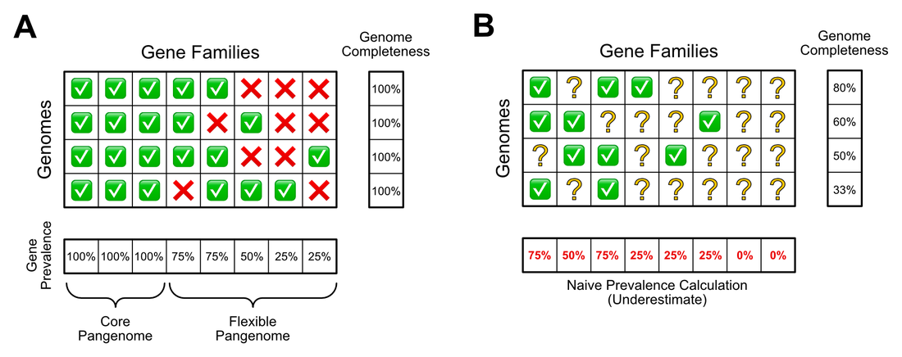
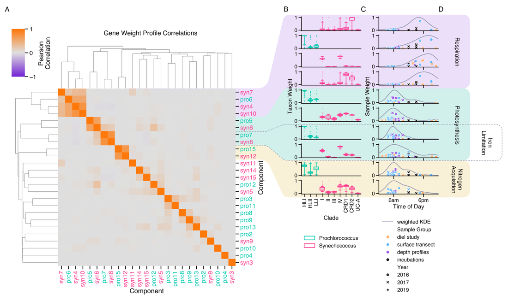
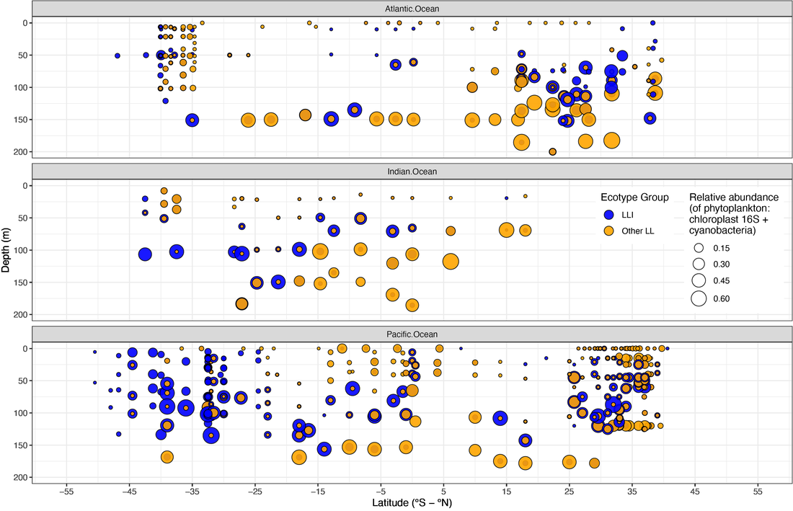
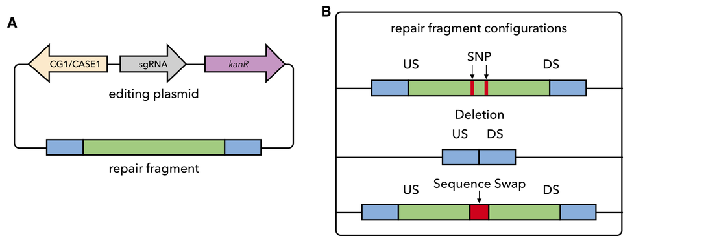

Stephen Blaskowski
Computational biologist developing statistical and machine learning methods that make meaning out of complex biological data.
Seattle, WA
stephen.blaskowski@gmail.com
Software
Python
Barnacle
Sparse tensor decomposition for finding interpretable patterns in high-dimensional sequencing data. Used by researchers in several labs for transcriptomic, metagenomic, and metabolomic data.
Documentation · readthedocs →
Python

gene-prevalence
Maximum-likelihood estimates of gene-family prevalence, with confidence intervals, that model genome incompleteness rather than discarding incomplete genomes.
Repository · GitHub →Selected papers

Science Advances · 2025
Simultaneous acclimation to nitrogen and iron scarcity in open ocean cyanobacteria revealed by sparse tensor decomposition of metatranscriptomes
Read the paper →
Preprint
bioRxiv · 2026
Estimating gene prevalence with incomplete genomes: application to the Prochlorococcus pangenome
Read the preprint →
Preprint

bioRxiv · 2026
Defining traits of low-light adapted Prochlorococcus inhabiting surface waters of the Equatorial Pacific Ocean
Read the preprint →
Journal of Industrial Microbiology & Biotechnology · 2019
Systematic investigation of CRISPR–Cas9 configurations for flexible and efficient genome editing in Corynebacterium glutamicum NRRL-B11474
* Co-first authors
Read the paper →